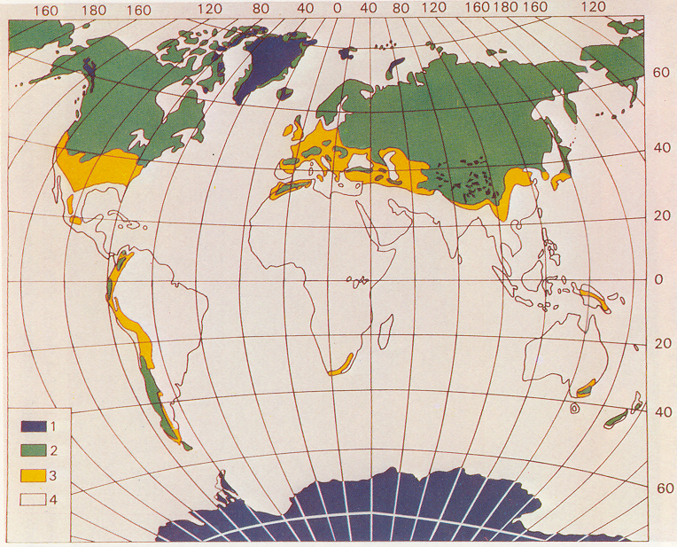
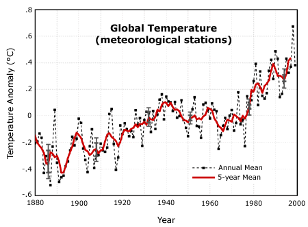
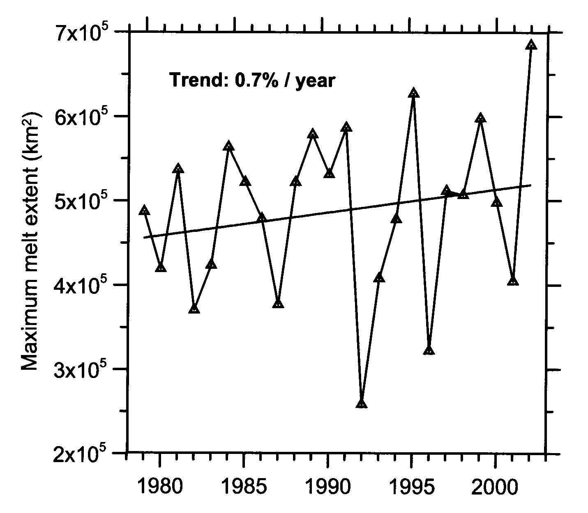
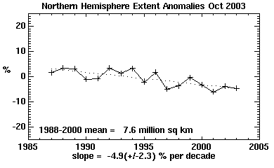
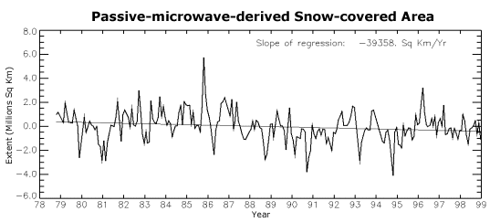
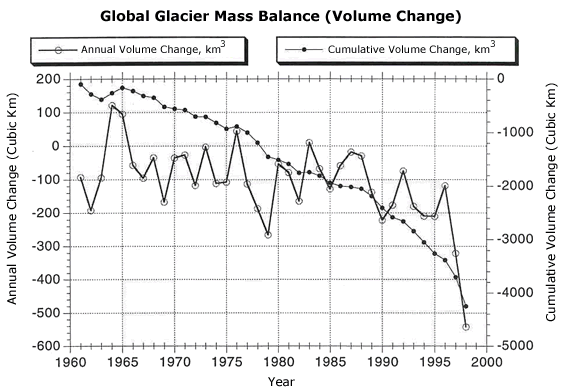

2. IMPORTANCE OF THE CRYOSPHERE
The cryosphere covers a significant portion of the Earth’s land and ocean surfaces. Seasonal snow cover reaches the widest extent of any cryospheric component, with a mean winter maximum extent encompassing about 31% of the total global land area, 98% of which occurs in the northern hemisphere (NSIDC, 2003d) . Figure 2 illustrates the spatial extent of permanent, relatively stable, and seasonal global snow cover. Also, about 10% of the Earth’s total land area is dominated by glaciers and ice sheets (NSIDC, 2003a).

Fig. 2. Map of permanent (blue), relatively stable (green), and seasonal (yellow) global snow cover (Hall and Martinec, 1985).
The oceans cover roughly 70% of the Earth’s total area, 57% of which is in the southern hemisphere. Mean Arctic sea ice extent varies between 5-10% of the total area of ocean in the northern hemisphere between summer and winter, reaching 14-16 million square kilometers at maximum extent and decreasing to about 7-9 million square kilometers in summer (NSIDC, 2003a). Antarctic sea ice, on the other hand, is less perennial, varying more widely between 2-10% of the total ocean area in the southern hemisphere between summer and winter, reaching 17-20 million square kilometers at maximum extent and decreasing to only 3-4 million square kilometers in summer (NSIDC, 2003a). When considering both hemispheres, sea ice varies between 4-10% of the total ocean area.
The cryosphere also holds a significant amount of the Earth’s total supply of freshwater. About 77% of Earth’s freshwater is frozen, 91% of which is contained in the Antarctic ice sheet, 8% in the Greenland ice sheet, and the remaining 1% is contained in glaciers (Christopherson, 2003; Thomas, 1993).
The cryosphere impacts global climate in a variety of ways. First of all, snow and ice have a high “albedo,” which means that they reflect a significant amount of solar radiation back into space. Snow and ice can reflect between 80-90% of incident solar energy, while vegetation and soils reflect as little as 20-30%. Sunlight that is reflected back into space does not get absorbed by the Earth as heat. A high albedo, then, is an important cooling factor in the global climate system. Given the significant spatial extent of snow and ice outlined above, a considerable amount of solar energy is deflected, protecting the Earth from extreme global warming.
Secondly, snow and ice act as an insulating layer over land and ocean surfaces, holding in heat and moisture that would otherwise escape into the atmosphere. This insulation, then, also acts to cool the global climate. Heat transfer between the ocean and atmosphere is several magnitudes greater over the open ocean than when sea ice is present; the thickness of the sea ice is also important in this regard, with thick ice (> 3-6 m) insulating 1-2 times greater than thin ice (1-2 m) (Gohin et al., 1998). Warm water from the tropics circulates to the poles and would otherwise significantly escape as heat into the polar atmosphere if it were not for the insulation that sea ice provides.
Lastly, because cold seawater can hold more salt than warmer seawater, polar seawater is dense and sinks to the bottom of the ocean, spreading out across the globe and acting as a pump which drives oceanic circulation that transfers energy between the equator and the poles (Hildore and Oliver, 1993). Since the primary transfer of heat to the poles is from the ocean (nearly twice the amount of absorbed solar radiation at the poles (Hildore and Oliver, 1993)), polar temperatures could decrease significantly at the poles without the action of this oceanic “conveyor belt,” stimulating a period of increased glaciation, or an ice age. Increasing amounts of freshwater ice introduced into the ocean from adjoining land sources (i.e. icebergs from glaciers, ice sheets, and ice shelves) act to decrease the salinity of the polar oceans, which can slow down or even inhibit this conveyor belt.
In addition to climate factors, the cryosphere is also important to study and monitor for a variety of societal reasons. For one, increased melting of glaciers and discharge from ice sheets has the potential to significantly increase global sea level. Over the past 100 years, sea level has risen by 1.0 to 2.5 mm per year (Church et al., 2001). Climate models predict that this rate will increase about two to five times over the next 100 years, partially as a result of increased glacial melt (Church et al., 2001). These estimates do not consider significant contributions from Greenland or Antarctica, which hold the potential for 5 m and 70 m of sea level rise, respectively. There is evidence that Greenland completely melted during the most recent interglacial (Cully and Marshall, 2000), and it is also known that the West Antarctic Ice Sheet is relatively unstable compared with the rest of Antarctica (Hildore and Oliver, 1993). Current estimates based on global census data from 1990 show that 23% of the global population lives within a 100 km distance of a coastline and within 100 m elevation of sea level and is growing faster than inland populations (Small and Nicholls, 2003). A high enough sea level rise would thus impact a significant portion of the human population, with the potential to inundate many small island states, increase coastal flooding of lowland deltas prevalent across central and southeast Asia, negatively impact agricultural and human water supplies, and destroy a large proportion of coastal wetlands (Nicholls, 2002).
Other important societal impacts of the cryosphere include hydroelectric energy production and freshwater supply from seasonal snowmelt; transportation and construction impedances caused by avalanches, sea ice and icebergs, and ground swells caused by frozen soils; as well as various hazards, including avalanches, blizzards, jökulhlaups (large outburst floods caused by the release of glacially dammed lakes), and icebergs. Avalanches claim more than 150 lives a year worldwide; the Blizzard of 1996 in the United States was responsible for over 100 deaths and brought much of the eastern U.S. to a complete halt; 6,000 people died when a glacial lake suddenly burst open in Peru in 1941; and 1,503 people drowned after the Titanic collided with an iceberg in 1912 (NSIDC, 2003a; NSIDC, 2003b).
The cryosphere is also important as an indicator of past and current climates. Ice cores drilled to the depths of the Greenland and Antarctic ice sheets have been used to reconstruct geologic climate history for important insights on past temperature changes and atmospheric chemistry. The cryosphere is also a tool for monitoring the present climate in that it is extremely sensitive to changes in temperature due to a mechanism known as “albedo-temperature feedback”. When temperatures rise, snow and ice begin to melt. When snow or ice melts, its albedo decreases. When albedo decreases, a material reflects less solar radiation and absorbs more heat. Absorbing more solar radiation leads to more melt, which in turn leads to greater decreases in albedo. The circular nature of this albedo-temperature interaction is thus termed a positive “feedback” and is what makes the cryosphere so sensitive to climate change. For this reason, the cryosphere can be considered the “canary in the coal mine” when it comes to global warming. Figure 3 illustrates this concept well by juxtaposing observed increases in global mean temperature over the past century with measurements of increasing melt in Greenland as well as decreasing northern hemisphere snow cover, sea ice extent, and global volume (or “mass balance”) of glaciers.
Fig. 3. (a) Increasing global temperatures have resulted in (b) increases in melt extent on Greenland, (c) decreases in northern hemisphere sea ice extent and (d) snow cover extent, and (e) decreases in global glacier mass balance.
 (a) Global temperature trend expressed as both the annual and five-year departure (anomaly) from the long-term mean temperatures, measured over 120 years (Hansen et al., 1999). |
 (b) Time series of Greenland melt extent, which has increased on average by 16% from 1979-2002 (Steffen and Huff, 2003). |
 (c) Northern Hemisphere sea ice extent anomalies, 1988-2003, derived from passive microwave satellite data, show a ~5% decrease per decade (NSIDC, 2003c). |
 (d) Northern Hemisphere snow cover extent anomalies, 1979-1998, derived from passive microwave satellite data, show a 0.4 % decrease per year (Armstrong and Brodzik, 2001). |
 (e) Average global mass balance of glaciers outside of Antarctica and Greenland for 1961-1998 show a loss of approximately 7 meters in thickness, or the equivalent of more than 4,000 cubic kilometers of water (Dyurgerov and Meier, 1997). |
Introduction
• Importance
of the cryosphere • What
is scatterometry?
Cryospheric applications of scatterometry • Problems,
issues, and future directions • Conclusion
• References
© 2004, {% include footer.ssi %}